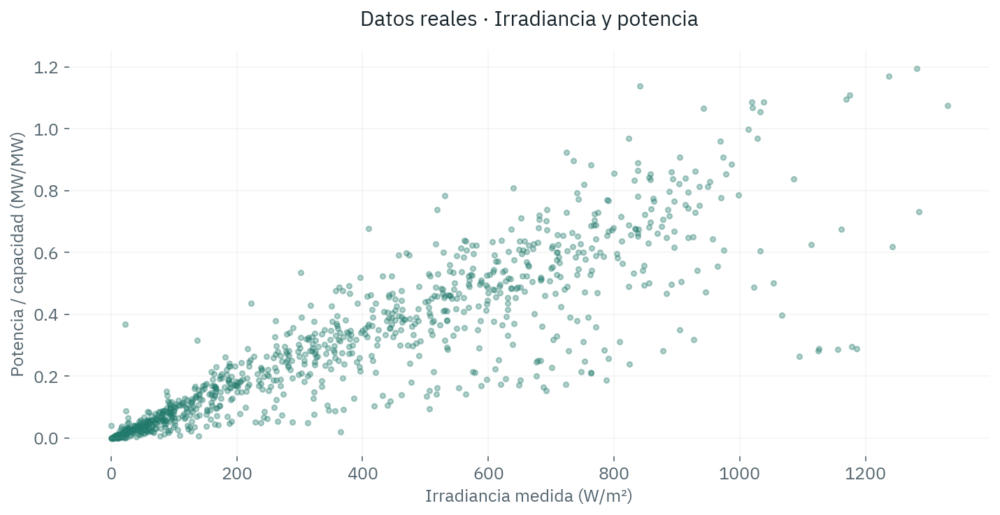
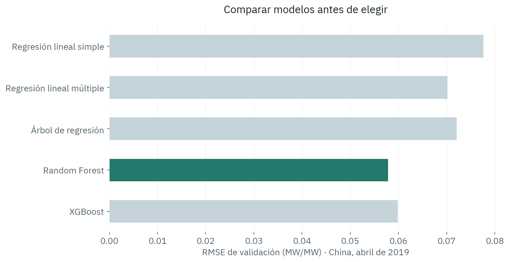
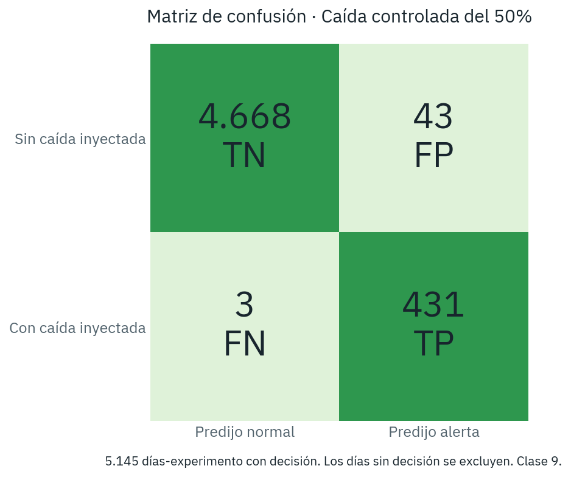
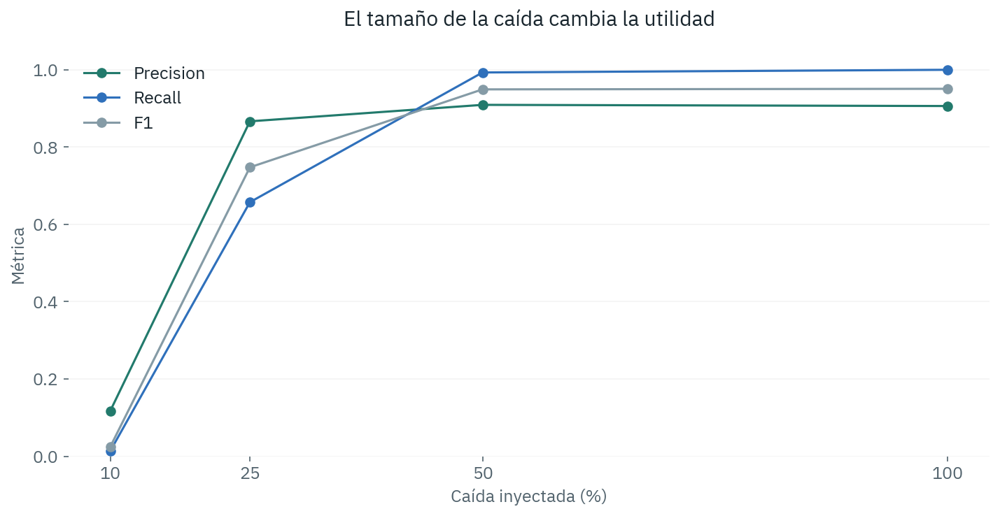

Solar / Datos · Respaldo de defensaUna pregunta de negocio
¿Podemos estimar la producción solar según el clima y señalar qué plantas conviene revisar?
Fuentes reales. Referencia estimada. Evaluación retrospectiva. Ninguna alerta confirma por sí sola una causa física.
Ignacio Melinc · Matias Young · Francisco Fabrello · Malena Garcia Moraglio
De las fuentes a la aplicación
Pipeline ETL y CRISP-DM · Clases 2 y 4
- PVOD / CAMMESA / Open-Meteo
- Preparar fechas, unidades y calidad
- Comparar modelos con train, validación y prueba
- Evaluar regresión y regla de residuos
- Dashboard local: evidencia para decidir
Entender los datos
EDA · Clase 4

La asociación justifica explorar modelos. No prueba causalidad.
Elegir el modelo
Regresión y ensambles · Clases 6, 7, 11 y 12

Prueba retrospectiva de Random Forest: MAE 0,0312, RMSE 0,0473, R² 0,9656; n = 4.944. Target en MW/MW.
Leer los errores
Matriz de confusión · Clase 9

Precision 90,9% · Recall 99,3%. Las caídas son pruebas, nunca entrenamiento.
Mostrar el límite
Accuracy no alcanza · Clase 9

La frecuencia de fallas la fija el benchmark; no se interpreta como precisión operativa garantizada.
Aplicar e interpretar
Casos con distinta frecuencia
China: diario con sensor. Argentina · Regresión lineal múltiple: MAE 0,0492, RMSE 0,0705, R² 0,4212; n = 1.105 meses-parque. Sin etiquetas independientes de fallas reales ni matriz de confusión.
Decidir con evidencia
Conclusión y próximo paso
La utilidad depende del error del modelo y la calidad de los datos. La regla encuentra caídas grandes en el experimento; las pérdidas pequeñas siguen siendo difíciles.
Más años y registros de mantenimiento permitirían comprobar causas y evaluar valor recuperable.
Sin decisión no significa funcionamiento normal. Déficit estimado no significa ahorro demostrado.